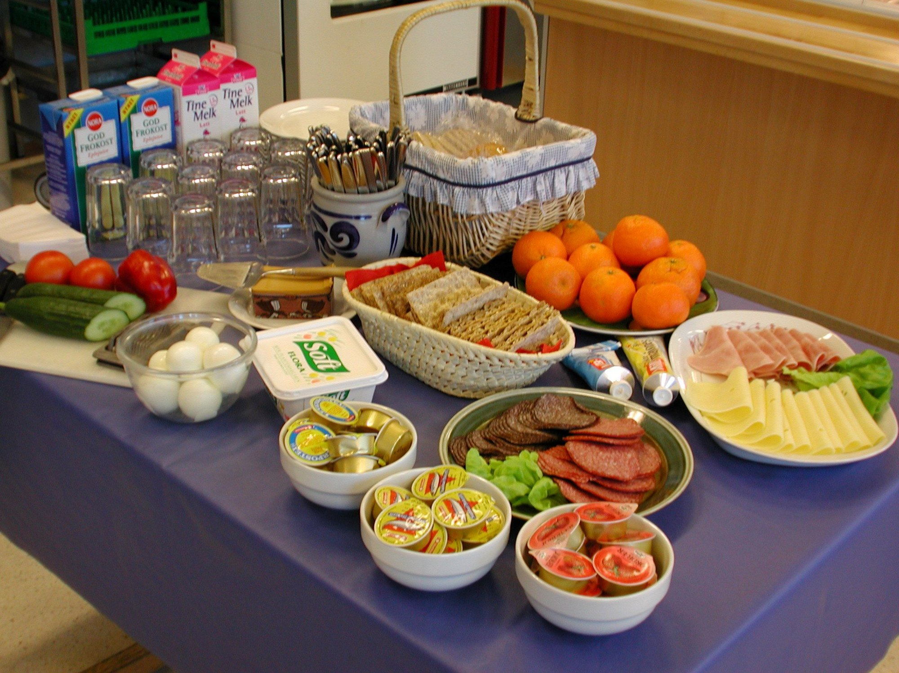

her finner du alle matvarene som vi tilbir hver dag til frokost og lunsj som er gratis og som koster penger
Det vi vanligvis kan ofre til forkost som er gratis er en blanding av enkle forkostblandinger som cornflakes og risgrøt. brød og kenkebrød med ulike topp som ost, salami og leverpostei. Drike er melk, juss og iblant så kan man få kakao. For de som har en slags type alergie til maten vi server til lunsj så kan de heller få velge mellom frokost tilbehørene for 30kr
mat som koster penger er ulike sandwithcer, wafler og noen fåe utvalg av gode ting.